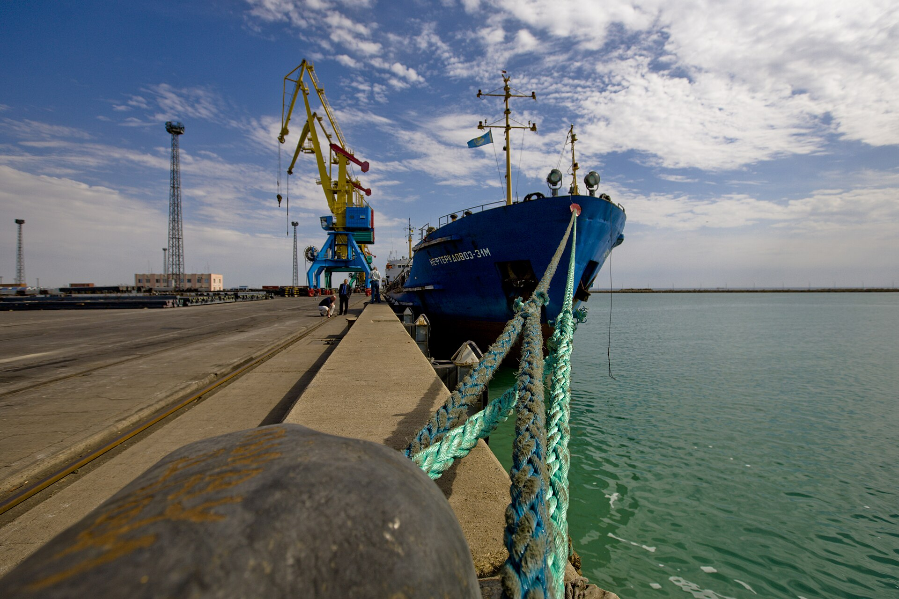

O‘rta yo‘lak bo‘ylab yuk tashish 22 foizga oshdi, ammo sharqqa yo‘nalgan yuklar ortda qolmoqda
2026-yilning yanvar–avgust oylarida Trans-Kaspiy marshrutida g‘arb yo‘nalishi konteyner oqimining 80 foizini tashkil etdi. Sharqqa faqat 20 foiz.

Trans-Kaspiy xalqaro transport marshruti — ko‘pincha “O‘rta yo‘lak” deb ataladigan yo‘nalish — bo‘ylab yuk tashish hajmi 2026-yilning birinchi sakkiz oyida 22 foizga oshdi. Sharq–G‘arb yo‘nalishidagi tranzit esa 55 foizga ko‘paydi.
Shu bilan birga statistikada muhim nomutanosiblik saqlanib qolmoqda: konteyner oqimining taxminan 80 foizi g‘arbga, atigi 20 foizi sharqqa yo‘nalgan. Yanvar–avgust oylarida sharqdan g‘arbga 42 642 TEU, teskari yo‘nalishda esa 10 932 TEU tashildi.
O‘rta yo‘lak nima
O‘rta yo‘lak — Xitoydan Qozog‘iston, Kaspiy dengizi, Ozarbayjon va Gruziya orqali Turkiya va Yevropaga olib boruvchi multimodal marshrut. U Rossiya hududidan o‘tuvchi shimoliy yo‘nalishga muqobil sifatida qaraladi.
Marshrutning asosiy xususiyati — u quruqlik, dengiz va yana quruqlik bo‘laklaridan iborat. Yuk Kaspiy dengizida paromga, keyin yana temir yo‘lga o‘tkaziladi. Har bir qayta yuklash qo‘shimcha vaqt va xarajat demakdir.
Etti yillik dinamika
Qozog‘iston orqali O‘rta yo‘lak bo‘ylab tashilgan yuk hajmi so‘nggi yetti yilda besh barobardan ko‘proq oshdi: yiliga 0,8 million tonnadan 4,5 million tonnagacha.
- 2025-yilda tashilgan konteynerlar: ~77 000 TEU
- 2029-yilga prognoz: 300 000 TEU
- Yanvar–avgust 2026: yuk hajmi +22%
- Sharq–G‘arb tranziti: +55%
- Sharqqa yo‘nalgan konteynerlar ulushi: ~20%
Nega bo‘sh konteynerlar muammo
Yuk oqimining bir tomonlama bo‘lishi logistikada klassik muammo hisoblanadi. G‘arbga to‘la konteyner bilan boradigan tarkib sharqqa ko‘pincha bo‘sh qaytadi. Bu esa bir TEU uchun tan narxini oshiradi, chunki qaytish yo‘li daromad keltirmaydi.
Amalda bu marshrutning tariflarini Suvaysh kanali orqali o‘tuvchi dengiz yo‘liga nisbatan raqobatbardosh saqlashni qiyinlashtiradi. Dengiz tashuvi sekinroq, ammo bir birlik yuk uchun arzonroq.
Infratuzilmaga investitsiyalar
2026-yil boshida Jahon banki Qozog‘iston temir yo‘l operatori “Qozog‘iston temir jo‘llari” uchun 846 million dollarlik kafolat ma’qulladi; u 1,4 milliard dollarlik moliyalashtirishni qo‘llab-quvvatlaydi. Loyihaga Osiyo infratuzilma investitsiyalari banki ham qo‘shildi.
Mablag‘lar operatsion islohotlar bilan bog‘langan: asosiy e’tibor Aktau va Quriq kabi Kaspiy portlarining samaradorligini oshirishga qaratilgan.
2026-yilgi ish rejasi
Marshrutda ishtirok etuvchi davlatlar 2026-yil uchun batafsil ish rejasini tasdiqladi. Rejadagi asosiy yo‘nalish — transport jarayonlarini raqamlashtirish: hujjat aylanishini elektronlashtirish, chegaralarda ma’lumot almashinuvini tezlashtirish va yuk harakatini kuzatish tizimlarini birlashtirish.
Cheklovlar
Tahlilchilar marshrutning imkoniyatlari cheklanganini qayd etadi: Kaspiy dengizidagi flot hajmi, portlarning yuk aylanmasi va temir yo‘l uchastkalarining o‘tkazuvchanligi asosiy “tor joylar” hisoblanadi.
Shuningdek, umumiy hajm nuqtai nazaridan O‘rta yo‘lak Xitoy–Yevropa savdosining kichik ulushini tashkil etadi. Uning roli asosan alternativ yo‘nalish sifatida — ya’ni boshqa marshrutlarda uzilish yuz berganda zaxira imkoniyat sifatida ko‘riladi.
Qozog‘iston uchun boshqa yo‘nalish
Xuddi shu davrda Qozog‘iston neft eksportida ham muqobil yo‘nalishlarni ko‘rib chiqmoqda. Kaspiy quvur konsorsiumi (CPC) mamlakat neft eksportining 80 foizdan ortig‘ini tashiydi; Novorossiysk yaqinidagi terminalda 8-sentabr kuni yuklash qisqa muddatga to‘xtatilgan edi.
Marshrut geografiyasi
O‘rta yo‘lak Xitoyning g‘arbiy chegarasidan boshlanadi. Yuk Qozog‘iston temir yo‘llari orqali Kaspiy dengizi sohilidagi Aktau yoki Quriq portlariga yetkaziladi, u yerdan parom yoki quruq yuk kemalari bilan Ozarbayjonning Boku (Alat) portiga o‘tkaziladi.
Keyingi bosqichda yuk Gruziya orqali Qora dengiz portlariga yoki Boku–Tbilisi–Qars temir yo‘li orqali Turkiyaga jo‘natiladi. Yakuniy nuqta — Yevropa bozorlari.
Marshrutda kamida ikki marta rejim o‘zgaradi: temir yo‘ldan dengizga va dengizdan yana temir yo‘lga. Har bir o‘tish qo‘shimcha vaqt, kran va terminal ishi hamda hujjat rasmiylashtirish talab qiladi.
Muqobil yo‘nalishlar bilan taqqoslash
Xitoy va Yevropa o‘rtasidagi yuk tashishda uch asosiy variant mavjud. Birinchisi — dengiz yo‘li Suvaysh kanali orqali; u eng arzon, lekin 30–45 kun davom etadi. Ikkinchisi — shimoliy temir yo‘l yo‘nalishi Rossiya va Belarus orqali. Uchinchisi — O‘rta yo‘lak.
O‘rta yo‘lakning afzalligi — siyosiy risklarning taqsimlanishi va dengiz yo‘liga nisbatan qisqaroq muddat. Kamchiligi — qayta yuklash sonining ko‘pligi va infratuzilma quvvatining cheklanganligi.
2023-yildan beri Qizil dengizdagi xavfsizlik holati tufayli ayrim yuk tashuvchilar Suvaysh kanali o‘rniga Afrikaning janubidagi yo‘lni tanlamoqda; bu esa quruqlik yo‘laklariga qiziqishni oshirgan omillardan biri bo‘ldi.
Portlar va flot
Kaspiy dengizidagi flot hajmi marshrutning asosiy cheklovlaridan biri hisoblanadi. Paromlar va konteyner kemalari soni chegaralangan; ularning jadvali ob-havo sharoitiga ham bog‘liq.
Jahon banki qo‘llab-quvvatlagan moliyalashtirish dasturi Aktau va Quriq portlarining samaradorligini oshirishga qaratilgan. Terminal quvvati va yuklash tezligi butun marshrutning o‘tkazuvchanligiga bevosita ta’sir qiladi.
O‘zbekiston uchun ahamiyati
O‘zbekiston O‘rta yo‘lakka Qozog‘iston va Turkmaniston orqali ulanadi. Mamlakat uchun bu yo‘nalish Yevropa bozorlariga chiqishning muqobil yo‘llaridan biri hisoblanadi.
Shu bilan birga, O‘zbekiston janubiy yo‘nalishni ham rivojlantirmoqda: Afg‘oniston orqali Pokiston portlariga chiqishni ko‘zda tutuvchi Trans-Afg‘on temir yo‘li loyihasi bo‘yicha texnik-iqtisodiy asoslash ishlari olib borilmoqda.
Raqamlashtirish
2026-yilgi ish rejasida asosiy yo‘nalish sifatida transport jarayonlarini raqamlashtirish belgilangan. Bu elektron hujjat aylanishi, chegaralarda oldindan ma’lumot almashinuvi va yuk harakatini kuzatish tizimlarini o‘z ichiga oladi.
Amaliy jihatdan raqamlashtirishning asosiy samarasi chegaralardagi kutish vaqtini qisqartirishda ko‘riladi — bu esa umumiy yetkazib berish muddatiga bevosita ta’sir qiladi.
Tarif va muddat
Yuk tashuvchilar uchun marshrut tanlashda ikki asosiy mezon — narx va muddat. O‘rta yo‘lak bo‘ylab yetkazib berish odatda dengiz yo‘liga nisbatan tezroq, lekin bir birlik yuk uchun qimmatroq bo‘ladi.
Shu sababli marshrut asosan yuqori qo‘shilgan qiymatga ega tovarlar — elektronika, ehtiyot qismlar, kimyo mahsulotlari — uchun jozibador hisoblanadi. Og‘ir va arzon yuklar uchun dengiz yo‘li afzal bo‘lib qolmoqda.
Konteyner balansi
Bo‘sh konteynerlarni qaytarish masalasi butun yo‘nalish iqtisodiyotiga ta’sir qiladi. Operatorlar buni hal qilish uchun odatda uch yo‘ldan foydalanadi: qaytish yo‘nalishi uchun chegirma tariflari, mintaqada yuk bazasini rivojlantirish va konteynerlarni boshqa marshrutlarga qayta taqsimlash.
Markaziy Osiyo davlatlarining eksport tuzilmasida xomashyo ulushi yuqori bo‘lgani uchun konteynerlashtirilgan yuk hajmi cheklangan — bu ham nomutanosiblikning sabablaridan biri.
Qozog‘iston Energetika vazirligi ma’lumotiga ko‘ra, 2025-yilda CPC orqali 64,8 million tonna neft eksport qilingan, Boku–Tbilisi–Jayhon quvuri orqali esa yiliga taxminan 1,2 million tonna jo‘natiladi.